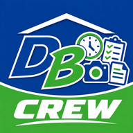

DB Time Clock
Sign in with your Deitemeyer Brothers Google account. Your hours post to JobTread under your name.
DB Time Clock
Today's job
—
Change job
On the clock
0:00:00
Switch code
Clock out
Clock in
Pick a code to start
Today on this job
Crew
Foreman view
Tap to allow the camera.
Allow camera
00 today
00:00
Before
00
During
00
After
00
Video
00
Day log
Not sent
Photos · 00
Add
Notes to the office
Add note
Send day to office
Photos flow into the DB Cam report. Hours post to JobTread.
Build
Copy diagnostics
Turn on notifications
Check for update
Clears this phone's copy of the app and reloads it. Your hours and any queued photos are untouched.
My jobs
—
Clock
My jobs
Capture
Day log
DB Time Clock · Now
Before photo not taken